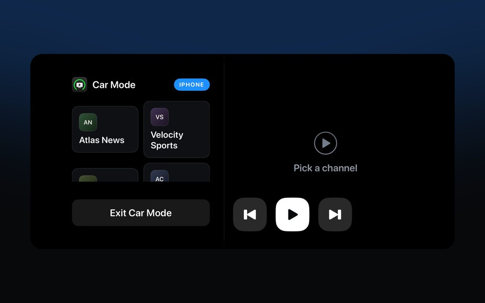
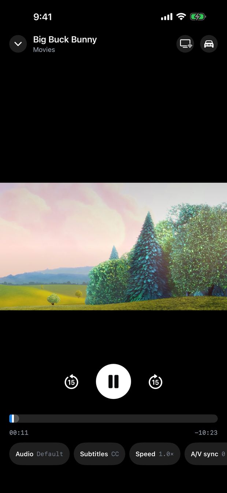

كيفية استخدام Car.TV
كل ميزة خطوة بخطوة، وكيفية استخدامها في السيارة.
المحتويات
- شاهد الجولة
- الاتصال بـ CarPlay
- البداية
- التلفاز المباشر
- دليل البرامج
- المكتبة
- فيديوهاتي
- الموسيقى
- قوائم التشغيل
- قائمة تشغيل
- المشغّل
- وضع السيارة
- المحفوظة
- المتصفح
- النقل عبر Wi-Fi
- الإعدادات
- أسئلة
شاهد الجولة
الاتصال بـ CarPlay
- تحقّق من سيارتكيعرض Car.TV الفيديو على شاشة السيارة فقط في السيارات التي تدعم الفيديو في CarPlay، مع iOS 26.4 أو أحدث. أما السيارات الأخرى فتشغّل الصوت. يخبرك «الإعدادات › فحص السيارة» بما تستطيع سيارتك فعله.

- بكبل أو لاسلكيًاوصّل iPhone بمنفذ USB الخاص بـ CarPlay في السيارة باستخدام كبل، أو استخدم CarPlay اللاسلكي إذا كانت سيارتك تدعمه.

- شغّل CarPlay على iPhoneالإعدادات › عام › CarPlay › اختر سيارتك. شغّل «السماح بـ CarPlay أثناء القفل».

- اعثر على Car.TV على شاشة السيارةاضغط على Car.TV في الشاشة الرئيسية لـ CarPlay. غير موجود؟ على iPhone: الإعدادات › عام › CarPlay › سيارتك › تخصيص › التطبيقات.

- اختر شيئًا لمشاهدتهالتلفاز المباشر وفيديوهاتي والموسيقى وقوائم التشغيل موجودة على شاشة السيارة، كما على هاتفك.

- الفيديو عند التوقفعندما تتحرك السيارة، يوقف CarPlay الصورة ويواصل Car.TV تشغيل الصوت، ويعرض الهاتف «شاشة السيارة · الصوت فقط».

- أزرار المقودأثناء البث المباشر، يغيّر زرّا التالي والسابق القناة. يمكنك إيقاف ذلك من الإعدادات › التشغيل.
- للركاب: وضع السيارةعلى الهاتف، يقدّم وضع السيارة مربعات كبيرة وأزرارًا كبيرة. أيها السائق، أبقِ عينيك على الطريق.

البداية
- مرحبًا بك في Car.TVالتلفاز المباشر والأفلام والفيديوهات والموسيقى، على iPhone وعلى التلفاز وعلى شاشة السيارة عند التوقف. إليك جولة مدتها دقيقة واحدة.
- أضف أي شيء من هناقائمة تشغيل IPTV (M3U)، أو بوابة Xtream، أو خادم Jellyfin أو Emby أو Plex، أو مجلد سحابي، أو فيديوهات من الملفات والصور.
- ابحث في كل شيءالقنوات والأفلام والمسلسلات وفيديوهاتك وأغانيك.
- الإعداداتمصادرك وPremium واللغة ووضع السيارة والقفل الأبوي، وهذا الدليل.
- الرئيسيةيتابع من حيث توقفت: متابعة المشاهدة، ويُعرض الآن، وجديد في مكتبتك.
- التلفاز المباشركل القنوات، حسب البلد أو باستخدام عوامل التصفية. اضغط مطولًا على قناة لعرض دليلها والمفضلة.
- المكتبةملفاتك أولًا: فيديوهاتي والموسيقى وقوائم التشغيل تعمل دون اتصال. الأفلام والمسلسلات تأتي من مصادرك.
- المحفوظةمفضلتك وتنزيلاتك، لوقت انعدام الإشارة.
- لا توجد قائمة تشغيل بعد؟جرّب القنوات النموذجية وافتح الأفلام لترى كيف يعمل كل شيء.
- المشغّليُفتح بملء الشاشة. اسحبه للأسفل ليستمر التشغيل في شريط صغير أثناء التصفح.
- أحضر ملفاتكأرسل الفيديوهات والموسيقى من حاسوب عبر النقل عبر Wi-Fi، أو احفظها من الويب باستخدام المتصفح.
- هل تستخدم Car.TV في السيارة؟تعرّف على طريقة الاتصال بـ CarPlay خطوة بخطوة. يمكنك إعادة هذه الجولة في أي وقت من الإعدادات › كيفية استخدام Car.TV.
التلفاز المباشر

- ابحث عن قناةابحث في كل القنوات بالاسم.
- تخطيطان، وبلدان، وعوامل تصفيةالمسار أو الصفوف، والقنوات حسب البلد، وعوامل تصفية حسب اللغة والفئة والجودة.
- اضغط مطولًا على قناةدليلها، والمفضلة، و«إصلاح الدليل» عندما يكون جدول البرامج غير متوفر.
دليل البرامج
- تنقّل عبر الوقتاضغط على برنامج يُعرض الآن لمشاهدته.
- شاهد ما فاتكالبرامج السابقة على القنوات التي لديها أرشيف تتيح «شاهد من البداية».
المكتبة
- ملفاتك الخاصةفيديوهاتي والموسيقى وقوائم التشغيل. تعمل دون اتصال، على الطريق وفي السيارة.
- من مصادركأفلام ومسلسلات من قوائم التشغيل والخوادم لديك. صفِّها حسب المصدر أو الفئة، ورتّبها.
- ابحث في هذا الرفيبحث فقط في الرف الذي تتصفّحه.
- المكتبة تتذكّرتُفتح على آخر رف استخدمته.
فيديوهاتي
- اضغط مطولًا على فيديوالتشغيل التالي، وإضافة إلى قائمة تشغيل، وإعادة تسمية، واختيار صورة، ونقل إلى مجلد، ومشاركة، وحذف.
- حدّد عدة عناصرانقل عدة فيديوهات أو أضفها إلى قائمة الانتظار أو احذفها دفعة واحدة.
- الترتيب والعرضحسب التاريخ أو الاسم أو الحجم أو المدة أو آخر تشغيل، كشبكة أو قائمة. والتخزين هنا أيضًا.
- إضافة فيديوهاتمن الملفات أو الصور، أو من حاسوب عبر النقل عبر Wi-Fi، أو من الويب.
الموسيقى
- الأغاني، الألبومات، الفنانونتصفّح موسيقاك بالطريقة التي تفضّلها.
- اسحب أغنيةلليمين لإضافتها إلى قائمة تشغيل، ولليسار لتعديل تفاصيلها أو حذفها. اضغط مطولًا لـ«التشغيل التالي».
- مؤقت النومتتوقف الموسيقى تلقائيًا بعد الوقت الذي تختاره.
قوائم التشغيل
- قائمة تشغيل جديدةاجمع الفيديوهات والأغاني بالترتيب الذي تريده، للمقعد الخلفي أو للطريق.
- استيراداستورد قائمة تشغيل .m3u من تطبيق آخر.
- قوائم التشغيل الذكيةتُحدَّث تلقائيًا لك: المضافة مؤخرًا، ولم تُشاهَد بعد، والفيديوهات القصيرة، والمزيد.
قائمة تشغيل

- غلافكاختر غلافًا من الصور أو لقطة من فيديو: ⋯ › الغلاف.
- تشغيل أو ترتيب عشوائيقائمة التشغيل كاملة، دون اتصال عندما يكون كل شيء على هذا الجهاز.
- التكرار والسرعة وعرض الشرائحتحتفظ كل قائمة تشغيل بإعدادات التكرار والسرعة الخاصة بها. أضف صورًا لتُعرض بملء الشاشة أثناء تشغيل الأغاني.
- المزيدأضف فيديوهات أو أغاني، وعدّل التفاصيل، وثبّت، وأنشئ نسخة مكررة، وصدّر بصيغة M3U. اسحب لإعادة الترتيب، واسحب لليسار للإزالة.
المشغّل

- اضغط على الصورةيُظهر عناصر التحكم أو يخفيها.
- تخطَّ 15 ثانيةللرجوع أو التقدم 15 ثانية، والزر الأوسط يوقف التشغيل مؤقتًا.
- الصورة والصوت والمزيدملاءمة أو ملء أو تكبير، والمسار الصوتي، والترجمة، والسرعة، ومزامنة الصوت والصورة.
- شغّل على تلفازAirPlay أو Google Cast أو تلفاز ذكي يدعم DLNA على شبكة Wi-Fi لديك.
- وضع السيارةأزرار كبيرة للركاب.
- استمر في التشغيلأغلقه أو اسحبه للأسفل، فيستمر التشغيل في الشريط الصغير.
وضع السيارة

- للركابمربعات كبيرة وأزرار كبيرة. أيها السائق، أبقِ عينيك على الطريق.
- الخروج من وضع السيارةللعودة إلى التطبيق الكامل.
المحفوظة
- المفضلة والتنزيلاتاضغط مطولًا على قناة أو افتح فيلمًا واضغط «إضافة إلى المحفوظة». تعمل التنزيلات بدون إشارة.
المتصفح
- ابحث أو اكتب عنوانًاتحتفظ صفحة البداية بمفضلتك والمواقع التي تزورها كثيرًا.
- علامات التبويبعدة صفحات في وقت واحد، وعلامات تبويب خاصة لا تحفظ السجل.
- الحفظ من هذه الصفحةاحفظ الموسيقى والفيديوهات التي يحق لك الاحتفاظ بها. تذهب الأغاني إلى الموسيقى، والفيديوهات إلى فيديوهاتي.
النقل عبر Wi-Fi
- ابدأ الخادمثم افتح العنوان الظاهر على حاسوب متصل بشبكة Wi-Fi نفسها وأفلت ملفاتك.
- أبقِ هذه الشاشة مفتوحةتتوقف عمليات النقل عند مغادرة هذه الشاشة. تذهب الأغاني إلى الموسيقى، والفيديوهات إلى فيديوهاتي.
الإعدادات
- مصادركأضف قوائم التشغيل والخوادم أو عدّلها أو حدّثها أو أوقفها.
- هذا الدليلأعد تشغيل الجولة، واتصل بـ CarPlay، واقرأ الدليل بلغتك.
أسئلة
لماذا تشغّل شاشة السيارة الصوت فقط أثناء القيادة؟
هكذا يعمل الفيديو في CarPlay حفاظًا على السلامة: تظهر الصورة فقط عندما تكون السيارة متوقفة. عندما تتحرك السيارة، يوقف CarPlay الصورة ويستمر الصوت. لا يمكن لأي تطبيق تغيير ذلك.
لماذا لا يظهر Car.TV على شاشة سيارتي؟
يظهر Car.TV فقط في السيارات التي تدعم الفيديو في CarPlay، مع iOS 26.4 أو أحدث. تحقّق من الإعدادات › عام › CarPlay › سيارتك › تخصيص › التطبيقات، واطّلع على «فحص السيارة» في إعدادات Car.TV.
هل يأتي Car.TV مع قنوات؟
لا. يشغّل Car.TV ما تضيفه: قائمة تشغيل IPTV أو بوابة يحق لك الوصول إليها، أو خادم الوسائط الخاص بك، أو فيديوهاتك وموسيقاك. جرّب قائمة التشغيل النموذجية لترى كيف يعمل.
ما الذي يعمل بدون إنترنت؟
كل ما في فيديوهاتي والموسيقى، وتنزيلاتك، وقوائم التشغيل المكوّنة منها. تخبرك قائمة التشغيل عندما يحتاج عنصر إلى الإنترنت.
كيف أضيف فيديوهاتي وموسيقاي إلى Car.TV؟
من الملفات أو الصور باستخدام زر +، أو من حاسوب عبر النقل عبر Wi-Fi، أو عبر AirDrop أو زر المشاركة، أو من الويب باستخدام المتصفح.
كيف أنشئ قائمة تشغيل مع عرض شرائح للصور؟
المكتبة › قوائم التشغيل › جديد، أضف الأغاني، ثم «إضافة عرض شرائح» واختر الصور. شغّل قائمة التشغيل لتملأ الصور الشاشة أثناء تشغيل الأغاني.
هل تظهر قوائم التشغيل الخاصة بي على أجهزتي الأخرى؟
نعم، مع Premium وتشغيل «مزامنة iCloud» في الإعدادات. تبقى الفيديوهات والأغاني على الجهاز الذي أُضيفت إليه، لذا تعرض قائمة التشغيل على جهاز آخر ما يوجد على ذلك الجهاز.
هل يجمع Car.TV بياناتي؟
لا. لا يوجد حساب ولا إعلانات ولا تتبّع. تبقى مصادرك وقوائم التشغيل والصور على أجهزتك، وفي iCloud الخاص بك إذا شغّلته.
أسئلة أخرى؟ راجع الأسئلة الشائعة →
لا تشاهد الفيديو أبدًا أثناء القيادة. يعرض CarPlay الفيديو فقط عندما تكون السيارة متوقفة، وأثناء القيادة يجب أن يكتفي السائق بالاستماع.